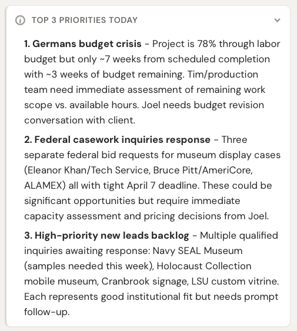
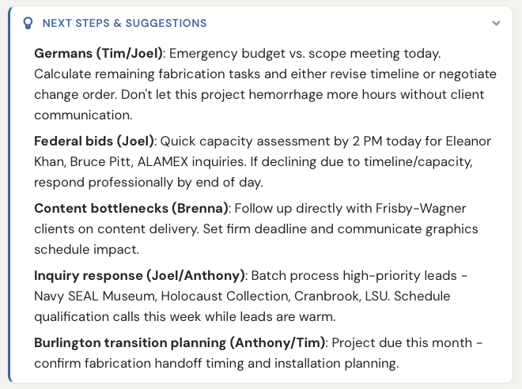
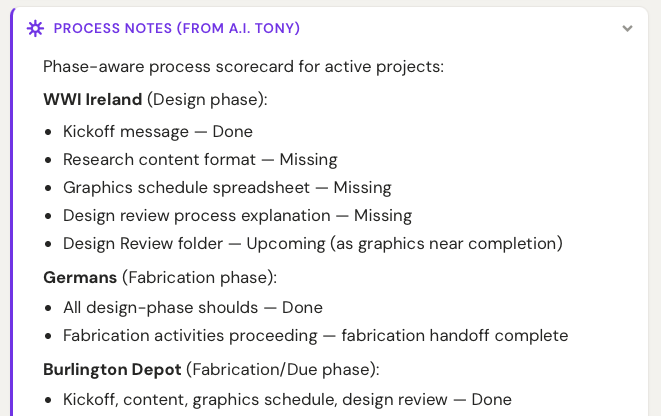

Easier, faster, visual.
Collisions obvious. Staffing is real math. Cash flow forecasts itself.
Then ODIN merges this with project data, financials, and client history.
2-Month Outlook
Design and fabrication are both significantly overbooked through May. Confirmed projects have locked in more work than the team can absorb. Options: negotiate timeline relief, push non-critical design into June, or bring in contract help now.
6-Month Outlook
The first three months are severely overloaded, then both teams drop sharply. Fab recovers faster than design, creating a mid-year imbalance. The fall gap for design persists even with potential projects factored in.
12-Month Outlook
Fab drops to near-idle by late 2026, then partially recovers. Design thins out through spring 2027. The cash flow impact compounds — sustained negative months from fall onward. Specific potential projects would bridge the worst of it, but only if they close.
AI-Generated Meeting Agendas





Quotes can generate a complete proposal from a sentence. The AI is accurate. But the team still reviews every line item.
The technology leaped ahead — the trust didn't.